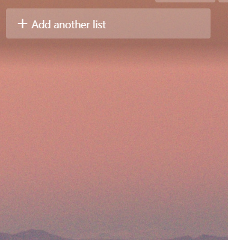
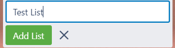
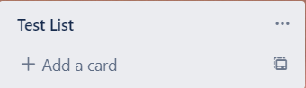

Adding a list
A list is a collection of cards that represent a specific topic.
-
In the middle of the screen you have an option to add lists to your already
created board. If you wish to add lists to your board, click the "add list"
option on the screen. Adding a list can help keep track of smaller tasks that
can help lead to completeing a bigger task. see (Figure 1).
Figure 1: Adding Lists 
-
After clicking this option you will need to enter a title for the list you want
to add. Once you have added the tittle click add (Figure 2). Naming the list
with a consistent naming heiracrchy will make it easier to track which sub-tasks
have been completed.
Figure 2: Naming the list 
-
You have now created a list within your board, and now you can add different
cards, lists, and other things to it (Figure 3). Editng your list once it is
created is very simple, just click the three dots on the top right and you can
add items, check items off, or even cross items off the list as you see
fit.
Figure 3: Newly created list 